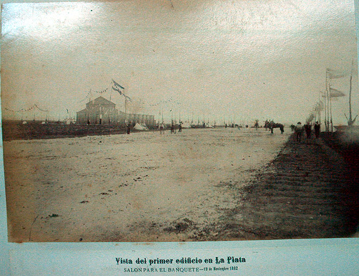

|
|  |
|
Anonymous, Album de vistas fotográficas de La Plata
|
Argentina did not suffer the overthrow of an entire political system in 1880, but the coming to power of a new political generation and a new alliance of regional elites loosely connected in the 'Partido Autonomista Nacional' nevertheless shook the balance of political and economic influence between Buenos Aires and the other provinces in a similar way as the republican coup in its northern neighbour and rival. The incoming President Julio Argentino Roca's determination to separate the capital city from its surrounding province and submit it directly to the authority of central government sparked an uprising of one sector of the traditional porteño elite that led to several months of heavy streetfighting and far heavier losses than in the entire 'Desert Campaign' of the previous year. Once Roca had asserted his power, his first decree in office declared the federalisation of Buenos Aires, in order to put an end to the politico-geographical schism that had dominated Argentine politics since independence. To emphasize his 'new beginning' –a 'refoundation' that was at the same time presented as fulfilling the 'original promise' of the revolution of 1810 of a united Argentina–, Roca and his political allies in Buenos Aires decided not merely to move the provincial authorities to another location, but to build a completely new provincial capital, the continent's first rationally planned and thus genuinely 'post-colonial' city. Construction works started in 1882, under a name proposed by the author of Martín Fierro, José Hernández: La Plata.
|